GeoFlow Imaging: dari emisi mikroseismik sumur dalam ke target pengeboran panas bumi.
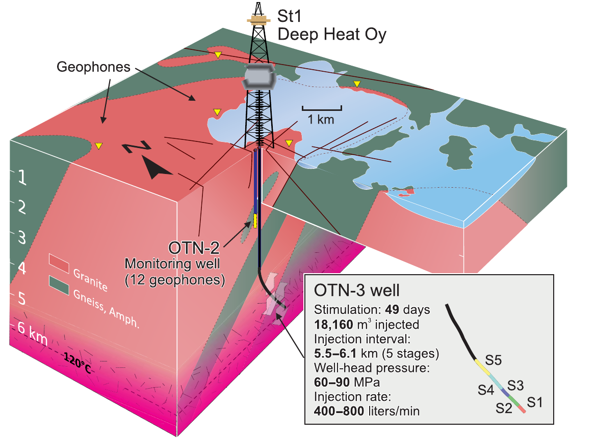
| Proyek | St1 Deep Heat, pilot EGS |
| Tujuan | Panas dasar jaringan pemanas Espoo |
| Batuan | Basement kristalin Prakambrium |
| Sumur | OTN-3 (stimulasi, 6,4 km MD); OTN-2 (pemantauan) |
| Suhu | ≈ 120 °C pada ≈ 6 km |
| Penggagas | Grup St1 (Mika Anttonen, pendiri dan Ketua Dewan) |
Air ≈ 120–150 °C: k = 10⁻¹⁷ m² setara ≈ 4–5×10⁻¹⁰ m/s (perkiraan sederhana).
| Disiplin | Mengukur | Celah terhadap permeabilitas |
|---|---|---|
| Geologi dan struktur | Rekahan, sesar, litologi, alterasi | Rekahan terbuka atau tertutup dan keterhubungan 3D tidak terlihat |
| Geokimia | Temperatur reservoir, asal fluida, tracer | Titik atau rata-rata; jalur dan laju aliran hanya disimpulkan |
| Reservoir engineering | Uji sumur, injektivitas, interferensi, kurva produksi | Baru ada setelah bor, dan hanya di sekitar sumur |
| Geofisika konvensional | Resistivitas, densitas, kecepatan | Sifat batuan, bukan sifat aliran |
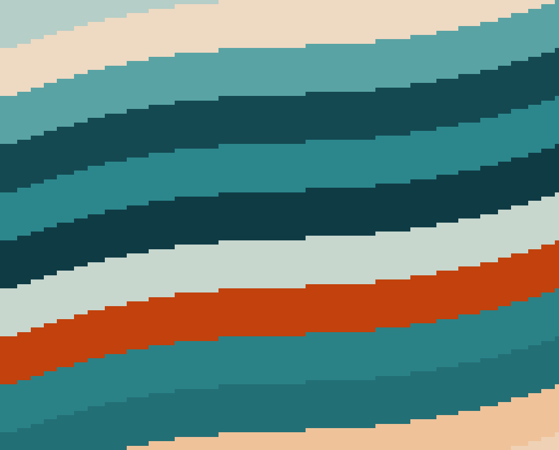
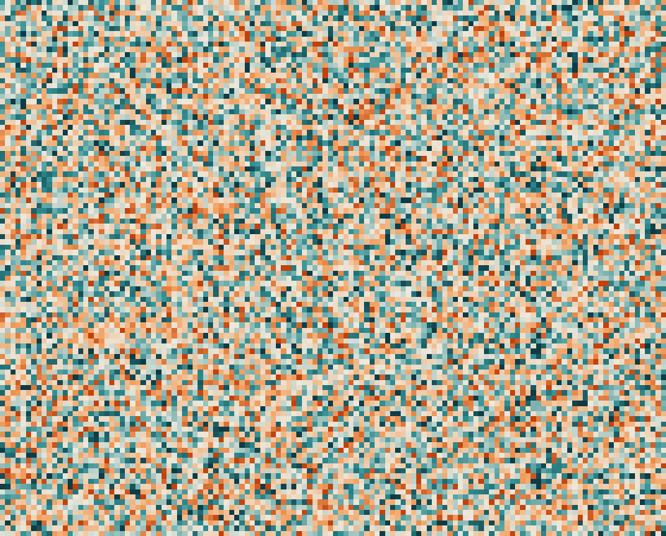
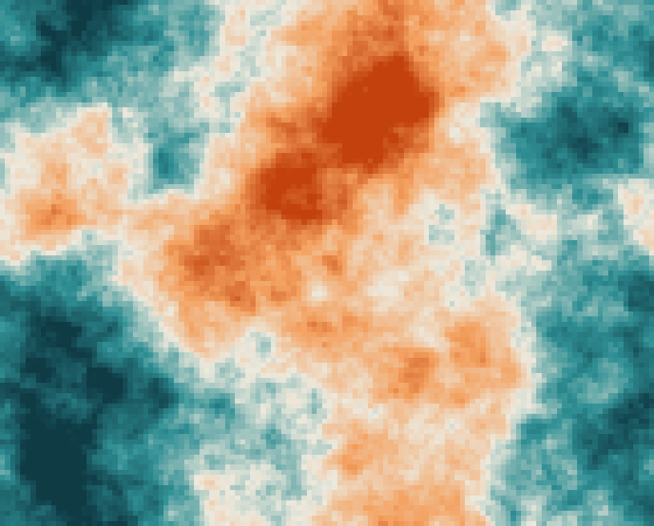
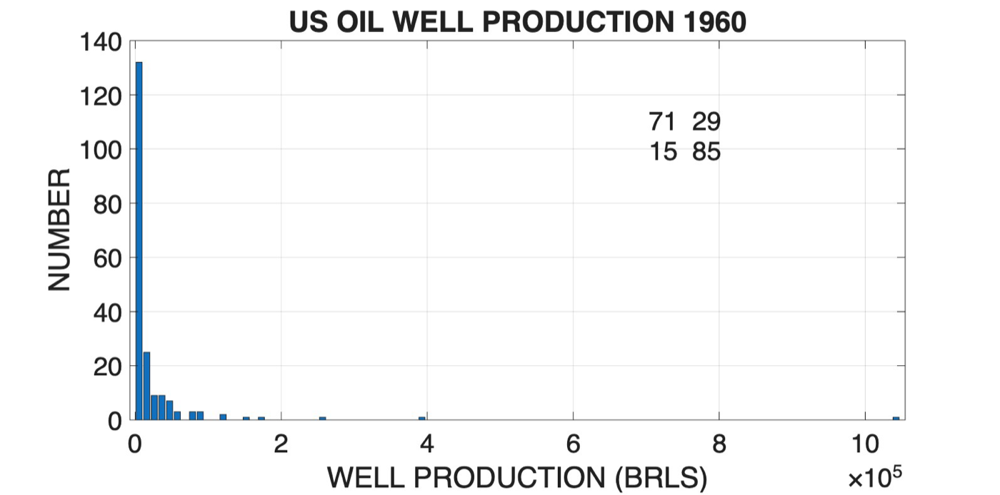
Hipotesis: sebagian event adalah emisi dari struktur poro-permeabel yang bertekanan lebih; lokasinya menandai jalur aliran aktif.
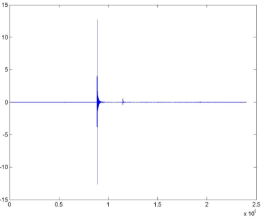
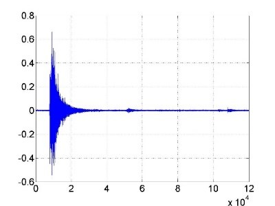
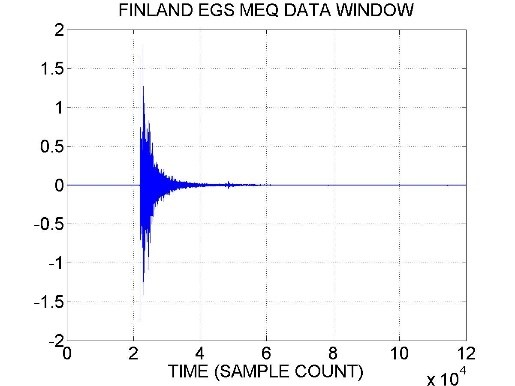
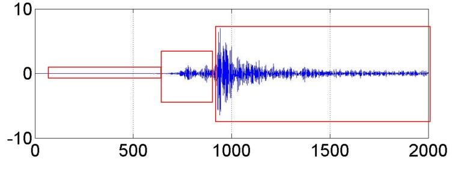
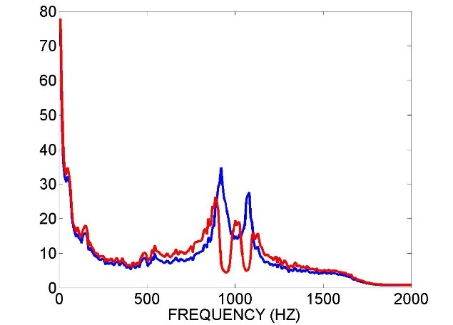
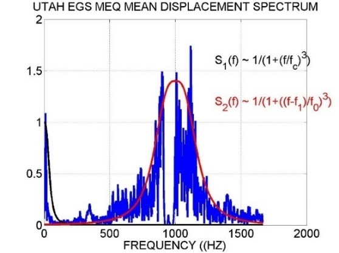
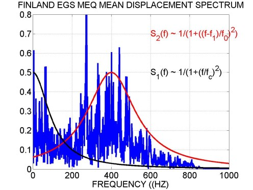
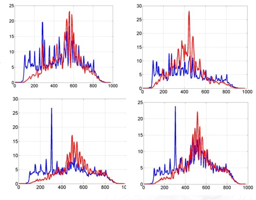
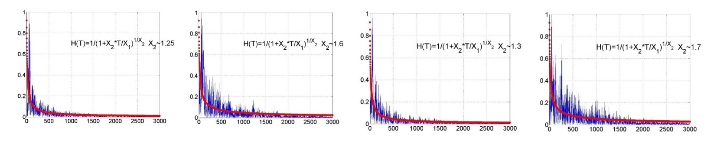
Asumsi kasar V ≈ 5 km/s; Vp batuan dasar Helsinki 6,39 km/s (Kwiatek dkk. 2019).